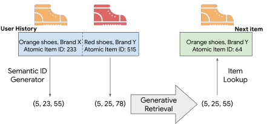
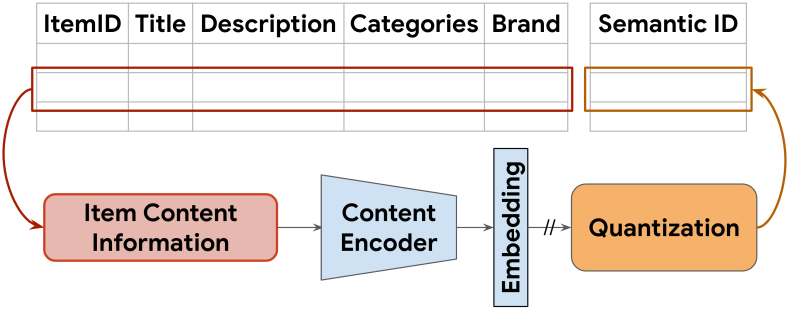
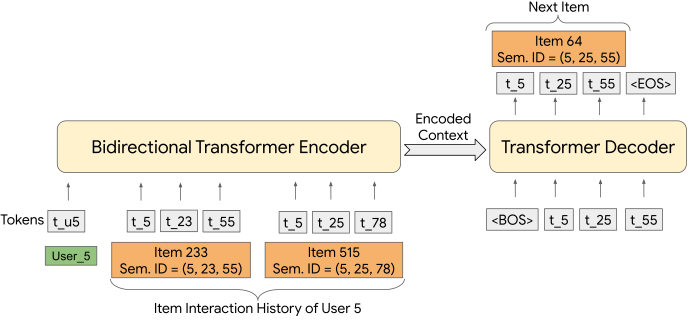
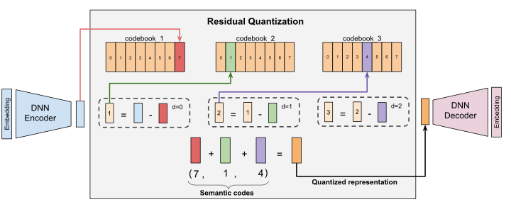
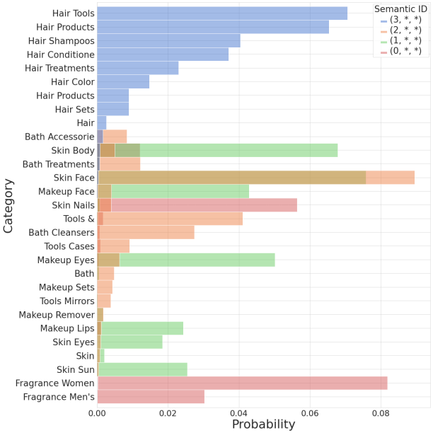
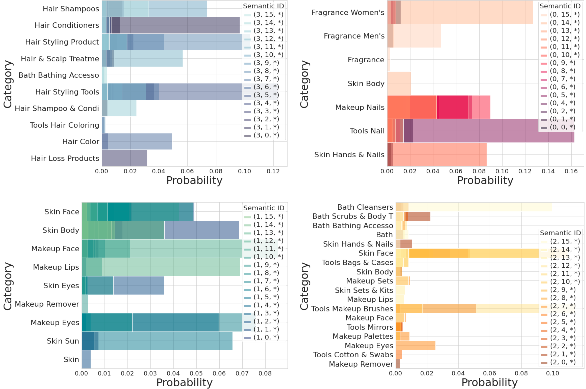
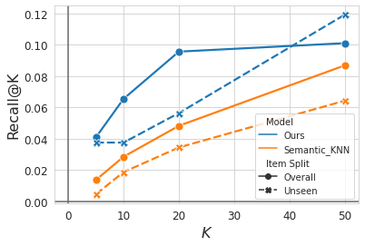
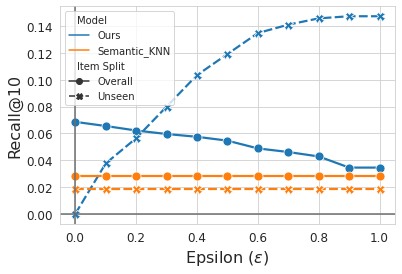

基于生成式检索的推荐系统
摘要
现代推荐系统通过将查询和候选物品嵌入到同一个统一空间中，随后进行近似最近邻搜索，以在给定查询嵌入的情况下选出排名靠前的候选，从而实现大规模召回。在本文中，我们提出一种新颖的生成式召回方法，其中召回模型自回归地解码目标候选的标识符。为此，我们为每个物品创建语义上有意义的码字元组，用作语义ID（Semantic ID）。给定用户会话中物品的语义ID，训练一个基于Transformer的序列到序列模型来预测用户接下来将与之交互的物品的语义ID。我们表明，使用所提出范式训练的推荐系统在各种数据集上显著优于当前的SOTA模型。此外，我们还表明，将语义ID纳入序列到序列模型可增强其泛化能力，这一点由对没有先前交互历史的物品所观察到的召回性能提升所证实。
1 引言

推荐系统帮助用户发现感兴趣的内容，广泛存在于视频[4, 43, 9]、应用[3]、商品[6, 8]和音乐[18, 19]等各种推荐领域。现代推荐系统采用召回—排序策略，其中在召回阶段选出一组可行候选，随后使用排序模型对其进行排序。由于排序模型仅处理其接收到的候选，因此期望召回阶段输出高度相关的候选。
构建召回模型有标准且成熟的方法。矩阵分解[19]在同一空间中学习查询和候选的嵌入。为了更好地捕捉数据中的非线性，近年来，采用内积将查询和候选嵌入映射到同一空间的双编码器架构[39]（即一个塔用于查询，另一个用于候选）变得流行。为了在推理期间使用这些模型，使用候选塔创建存储所有物品嵌入的索引。对于给定查询，使用查询塔获得其嵌入，并使用近似最近邻（ANN）算法进行召回。近年来，双编码器架构也被扩展到序列推荐[11, 24, 41, 17, 32, 6, 44]，显式地考虑用户—物品交互的顺序。
我们提出一种为序列推荐构建生成式召回模型的新范式。与传统的查询—候选匹配方法不同，我们的方法使用端到端生成模型直接预测候选ID。 我们提出利用Transformer[36]记忆（参数）作为推荐系统召回的端到端索引，这令人联想到Tay等人[34]将Transformer记忆用于文档召回的作法。我们将我们的方法称为用于生成式推荐器的Transformer索引（TIGER）。TIGER的高层概览如图1所示。TIGER的独特之处在于一种新颖的物品语义表示，称为“语义ID”（Semantic ID）——即从每个物品的内容信息导出的令牌序列。具体而言，给定物品的文本特征，我们使用预训练的文本编码器（例如SentenceT5[27]）生成稠密内容嵌入。然后对物品的嵌入应用量化方案，形成一组有序的令牌/码字，我们将其称为该物品的语义ID。最终，这些语义ID用于在序列推荐任务上训练Transformer模型。
将物品表示为语义令牌序列具有许多优势。在语义有意义的数据上训练Transformer记忆可以实现相似物品之间的知识共享。这使我们能够摒弃先前在推荐模型中用作物品特征的原子化随机物品ID[33, 42, 11, 8]。借助物品的语义令牌表示，模型更不易受推荐系统中固有反馈回路[1, 26, 39]的影响，从而使模型能够泛化到语料库中新添加的物品。此外，使用令牌序列进行物品表示有助于缓解与物品语料库规模相关的挑战；可用令牌表示的物品数量是序列中每个令牌基数之积。通常，物品语料库的规模可达数十亿量级，为每个物品学习唯一嵌入可能占用大量内存。虽然可以采用基于随机哈希的技术[16]来缩减物品表示空间，但在本工作中，我们表明使用语义上有意义的令牌进行物品表示是一种有吸引力的替代方案。本工作的主要贡献总结如下：
-
1.
我们提出TIGER，一种新颖的基于生成式召回的推荐框架，它为每个物品分配语义ID，并训练召回模型来预测给定用户可能接触的物品的语义ID。
-
2.
我们表明，以召回率和NDCG指标衡量，TIGER在多个数据集上优于现有的SOTA推荐系统。
-
3.
我们发现，这种生成式召回的新范式为序列推荐系统带来了两项额外能力：1. 能够推荐新的和不频繁出现的物品，从而改善冷启动推荐；以及2. 能够使用可调参数生成多样化的推荐。
2 相关工作
序列推荐器。
在推荐系统中使用深度序列模型已发展出丰富的文献。GRU4REC[11]首次使用基于GRU的RNN进行序列推荐。 Li等人[24]提出了神经注意力会话推荐（NARM），其中使用注意力机制与GRU层来跟踪用户的长期意图。Zhang等人提出的AttRec[41]使用自注意力机制对用户在当前会话中的意图进行建模，并通过度量学习对用户—物品亲和度建模来确保个性化。同时，Kang等人也提出了SASRec[17]，其使用类似于仅解码器Transformer模型的自注意力。受掩码语言建模在语言任务中取得成功的启发，BERT4Rec[32]和Transformers4Rec[6]利用带有掩码策略的Transformer模型完成序列推荐任务。-Rec[44]通过在四个自监督任务上进行预训练改进了数据表示，而不仅仅是掩码。上述模型为每个物品学习高维嵌入，并在最大内积搜索（MIPS）空间中进行ANN以预测下一个物品。相比之下，我们提出的技术TIGER使用生成式召回直接预测下一个物品的语义ID。
语义ID。
生成式召回。
3 所提出的框架


我们提出的框架包含两个阶段：
-
1.
使用内容特征生成语义ID。这涉及将物品内容特征编码为嵌入向量，并将该嵌入量化为语义码字元组。所得的码字元组称为该物品的语义ID。
-
2.
在语义ID上训练生成式推荐系统。使用语义ID序列在序列推荐任务上训练Transformer模型。
3.1 语义ID生成
在本节中，我们描述推荐语料库中物品的语义ID生成过程。我们假设每个物品都有相关联的内容特征，这些特征捕捉有用的语义信息（例如标题或描述或图像）。此外，我们假设可以使用预训练的内容编码器生成语义嵌入。例如，可以使用Sentence-T5[27]和BERT[7]等通用预训练文本编码器将物品的文本特征转换为语义嵌入。随后对语义嵌入进行量化，为每个物品生成语义ID。图2(a)给出了该过程的高层概览。
我们将语义ID定义为长度为的码字元组。 元组中的每个码字来自不同的码本。因此，语义ID可唯一表示的物品数量等于各码本大小之积。 尽管不同的语义ID生成技术会导致ID具有不同的语义特性，但我们希望它们至少具有以下特性： 相似物品（内容特征相似或其语义嵌入接近的物品）应具有重叠的语义ID。 例如，比较语义ID为的物品与语义ID为的物品，前者应比ID为的物品更相似。接下来，我们讨论用于语义ID生成的量化方案。

用于语义 ID 的 RQ-VAE。残差量化变分自编码器（Residual-Quantized Variational AutoEncoder，RQ-VAE）[40]是一种多级向量量化器，它对残差施加量化以生成码字元组（又称语义 ID）。该自编码器通过更新量化码本和 DNN 编码器-解码器参数进行联合训练。Fig. 3展示了通过残差量化生成语义 ID 的过程。
RQ-VAE 首先对输入 进行编码，所用编码器为 ，以学习潜在表示 。在第零层（），初始残差直接定义为 。 在每一层 ，我们有一个码本 ，其中 为码本大小。 然后，将 量化，即将其映射到该层码本中最近的嵌入。 最近嵌入 在 处的索引，即 ，表示第零个码字。 对于下一层 ，残差定义为 。 然后，与第零层类似，第一层的编码通过在第一层的码本中找到最接近 的嵌入来计算。 该过程递归重复 次，以得到表示语义 ID 的 个码字组成的元组。 这种递归方法从粗到细的粒度近似输入。 注意，我们选择使用大小为 的独立码本，为 个层级中的每一层各设置一个，而不是使用单个大小为 的码本。 这样做是因为残差的范数往往随着层数增加而减小，从而允许不同层级具有不同的粒度。
一旦我们得到语义 ID ， 的量化表示便计算为 。 然后将 传递给解码器，解码器尝试重建输入 ，所用映射为 。RQ-VAE 损失定义为 ，其中 ，且 。 这里 是解码器的输出，而 sg 是停止梯度操作 [35]。该损失联合训练编码器、解码器和码本。
如 [40] 所提出的，为防止 RQ-VAE 出现码本坍缩（即大多数输入仅被映射到少数几个码本向量），我们使用基于 k-means 聚类的码本初始化。具体而言，我们在第一个训练批次上应用 k-means 算法，并将质心用作初始化。
量化的其他替代方案。生成语义 ID 的一个简单替代方案是使用局部敏感哈希（LSH）。我们在小节 4.2 中进行了消融研究，发现 RQ-VAE 确实优于 LSH。另一种选择是分层使用 k-means 聚类 [34]，但它在不同簇之间丢失了语义含义 [37]。我们还尝试了 VQ-VAE，虽然它在召回阶段生成候选时与 RQ-VAE 表现相似，但它丢失了 ID 的层次性质，而这种层次性质赋予了第 4.3 节中讨论的许多新能力。
处理冲突。取决于语义嵌入的分布、码本大小的选择以及码字长度，可能会发生语义冲突（，即多个物品映射到同一语义 ID）。为了消除冲突，我们在有序语义编码的末尾附加一个额外的 token，使它们唯一。例如，如果两个物品共享语义 ID ，我们附加额外的 token 来区分它们，将这两个物品分别表示为 和 。为了检测冲突，我们维护一个将语义 ID 映射到相应物品的查找表。注意，冲突检测与修正在 RQ-VAE 模型训练完成后仅进行一次。此外，由于语义 ID 是整数元组，与高维嵌入相比，查找表在存储方面是高效的。
3.2 使用语义 ID 的生成式召回
4 实验
数据集。我们在 Amazon Product Reviews 数据集 [10] 的三个公开真实世界基准上评估所提出的框架，该数据集包含 1996 年 5 月至 2014 年 7 月的用户评论和物品元数据。具体而言，我们将 Amazon Product Reviews 数据集的三个类别用于序列推荐任务：“Beauty”“Sports and Outdoors”和“Toys and Games”。我们在附录 C 中讨论数据集统计和预处理。
评估指标。我们使用 top-k Recall（Recall@K）和 的归一化折损累计增益（NDCG@K）来评估推荐性能。
RQ-VAE 实现细节。如第 3.1 节所讨论的，RQ-VAE 用于量化物品的语义嵌入。我们使用预训练的 Sentence-T5 [27] 模型来获取数据集中每个物品的语义嵌入。具体而言，我们使用物品的内容特征（如标题、价格、品牌和类别）构造一个句子，然后将其传递给预训练的 Sentence-T5 模型，以获得维度为 768 的物品语义嵌入。
RQ-VAE 模型由三个组件组成：
一个 DNN 编码器，将输入的语义嵌入编码为潜在表示，
一个残差量化器，输出量化表示，以及
一个 DNN 解码器，将量化表示解码回语义输入嵌入空间。
编码器有三个中间层，大小分别为 512、256 和 128，使用 ReLU 激活，最终潜在表示维度为 。
为了量化该表示，进行三级残差量化。对于每一级，维护一个基数为 的码本，其中码本中的每个向量维度为 。在计算总损失时，我们使用 。RQ-VAE 模型训练 20k 个 epoch 以确保高码本使用率（）。我们使用 Adagrad 优化器，学习率为 0.4，批次大小为 1024。训练完成后，我们使用学习到的编码器和量化组件为每个物品生成一个 3 元组语义 ID。为避免多个物品被映射到同一语义 ID，我们为共享相同前三个码字的物品添加一个唯一的 编码， 两个与元组（7，1，4）关联的物品分别被分配为（7，1，4，0）和（7，1，4，1）（如果没有冲突，我们仍将 0 分配为第四个码字）。这使得推荐语料库中每个物品都获得一个长度为 4 的唯一语义 ID。
序列到序列模型实现细节。我们使用开源的 T5X 框架 [28] 实现基于 Transformer 的编码器-解码器架构。为使模型能够处理序列推荐任务的输入，序列到序列模型的词表包含每个语义码字的 token。具体而言，词表包含 1024（）个 token 来表示语料库中的物品。除物品的语义码字外，我们还在词表中添加用户特定的 token。为限制词表大小，我们仅为用户 ID 添加 2000 个 token。我们使用哈希技巧 [38] 将原始用户 ID 映射到 2000 个用户 ID token 之一。我们将输入序列构造为：用户 ID token 后接对应用户物品交互历史的语义 ID token 序列。我们发现，将用户 ID 添加到输入中可使模型对召回的物品进行个性化。
我们为基于 Transformer 的编码器和解码器模型各使用 4 层，每层具有 6 个维度为 64 的自注意力头。我们对所有层使用 ReLU 激活函数。MLP 维度和输入维度分别设置为 1024 和 128。我们使用的 dropout 为 0.1。总体而言，该模型约有 13 百万个参数。我们针对“Beauty”和“Sports and Outdoors”数据集训练该模型 200k 步。由于“Toys and Games”数据集规模较小，仅训练 100k 步。我们使用的批次大小为 256。学习率为 ，用于前 10k 步，之后遵循逆平方根衰减调度。
4.1 序列推荐上的性能


在本节中，我们将所提出的生成式召回框架与以下序列推荐方法进行比较（这些方法在附录 B 中简要描述）：GRU4Rec [11]、Caser [33]、HGN [25]、SASRec [17]、BERT4Rec [32]、FDSA [42]、S3-Rec [44] 和 P5 [8]。 值得注意的是，所有基线（P5 除外）都使用双编码器学习高维向量空间，即将用户过去的物品交互和候选物品编码为高维表示，并使用 最大内积搜索（MIPS）来召回用户接下来可能交互的下一个候选物品。相比之下，我们新颖的生成式召回框架使用序列到序列模型直接逐 token 预测物品的语义 ID。
| Methods | Sports and Outdoors | Beauty | Toys and Games | |||||||||
|---|---|---|---|---|---|---|---|---|---|---|---|---|
| Recall @5 | NDCG @5 | Recall @10 | NDCG @10 | Recall @5 | NDCG @5 | Recall @10 | NDCG @10 | Recall @5 | NDCG @5 | Recall @10 | NDCG @10 | |
| P5 [8] | 0.0061 | 0.0041 | 0.0095 | 0.0052 | 0.0163 | 0.0107 | 0.0254 | 0.0136 | 0.0070 | 0.0050 | 0.0121 | 0.0066 |
| Caser [33] | 0.0116 | 0.0072 | 0.0194 | 0.0097 | 0.0205 | 0.0131 | 0.0347 | 0.0176 | 0.0166 | 0.0107 | 0.0270 | 0.0141 |
| HGN [25] | 0.0189 | 0.0120 | 0.0313 | 0.0159 | 0.0325 | 0.0206 | 0.0512 | 0.0266 | 0.0321 | 0.0221 | 0.0497 | 0.0277 |
| GRU4Rec [11] | 0.0129 | 0.0086 | 0.0204 | 0.0110 | 0.0164 | 0.0099 | 0.0283 | 0.0137 | 0.0097 | 0.0059 | 0.0176 | 0.0084 |
| BERT4Rec [32] | 0.0115 | 0.0075 | 0.0191 | 0.0099 | 0.0203 | 0.0124 | 0.0347 | 0.0170 | 0.0116 | 0.0071 | 0.0203 | 0.0099 |
| FDSA [42] | 0.0182 | 0.0122 | 0.0288 | 0.0156 | 0.0267 | 0.0163 | 0.0407 | 0.0208 | 0.0228 | 0.0140 | 0.0381 | 0.0189 |
| SASRec [17] | 0.0233 | 0.0154 | 0.0350 | 0.0192 | 0.0387 | 0.0249 | 0.0605 | 0.0318 | 0.0463 | 0.0306 | 0.0675 | 0.0374 |
| S3-Rec [44] | 0.0251 | 0.0161 | 0.0385 | 0.0204 | 0.0387 | 0.0244 | 0.0647 | 0.0327 | 0.0443 | 0.0294 | 0.0700 | 0.0376 |
| TIGER [Ours] | 0.0264 | 0.0181 | 0.0400 | 0.0225 | 0.0454 | 0.0321 | 0.0648 | 0.0384 | 0.0521 | 0.0371 | 0.0712 | 0.0432 |
| +5.22% | +12.55% | +3.90% | +10.29% | +17.31% | +29.04% | +0.15% | +17.43% | +12.53% | +21.24% | +1.71% | +14.97% | |
4.2 物品表示
在本节中，我们分析 RQ-VAE 语义 ID 的几个重要特性。具体而言，我们首先进行定性分析，以观察语义 ID 的层次结构特性。接着，我们通过将性能与另一种基于哈希的量化方法进行对比，来评估我们使用 RQ-VAE 进行量化这一设计选择的重要性。最后，我们进行消融实验，通过将 TIGER 与使用随机 ID 作为物品表示的序列到序列模型进行比较，来研究使用语义 ID 的重要性。
定性分析。我们在图4中分析了为 Amazon Beauty 数据集学习到的 RQ-VAE 语义 ID。为便于说明，我们将 RQ-VAE 的层数设为3，码本大小分别为4、16和256，即对于给定物品的语义 ID ，、和。在图4(a)中，我们用标注每个物品的类别，以在数据集的整体类别分布中可视化特有的类别。如图4(a)所示，捕获了物品的高层类别。例如，包含大部分与“Hair”相关的产品。类似地，具有的多数物品是用于面部、唇部和眼部的“Makeup”和“Skin”产品。
我们还通过固定并可视化所有可能取值的类别分布，结果见Fig. 4(b)，来可视化 RQ-VAE 语义 ID 的层次结构特性。我们再次发现，第二个码字进一步将所捕获的高层语义划分为细粒度类别。RQ-VAE 学习到的语义 ID 的层次结构特性开辟了一系列新能力，这些将在第4.3节中讨论。与基于随机原子 ID 学习物品嵌入的现有推荐系统不同，TIGER 使用语义 ID，其中语义相似的物品具有重叠的码字，这使得模型能够有效地共享数据集中语义相似物品的知识。
哈希与 RQ-VAE 语义 ID 的比较。我们通过将 RQ-VAE 与局部敏感哈希（LSH）[14, 13, 2]用于语义 ID 生成进行对比，来研究 RQ-VAE 在我们框架中的重要性。LSH 是一种流行的哈希技术，可以很容易地适配我们的设定。为生成 LSH 语义 ID，我们使用个随机超平面对嵌入向量执行随机投影，并计算如下二值向量：。该向量按转换为整数编码。此过程使用一组独立的随机超平面重复次，得到个码字，我们将其称为 LSH 语义 ID。
在表2中，我们将 LSH 语义 ID 与我们所提出的 RQ-VAE 语义 ID 的性能进行比较。在该实验中，对于 LSH 语义 ID，我们使用个随机超平面并设置，以确保基数与 RQ-VAE 相当。超平面的参数从标准正态分布中随机采样，这确保了超平面具有球对称性。我们的结果表明 RQ-VAE 始终优于 LSH。这说明，在给定相同的基于内容的语义嵌入的情况下，通过非线性深度神经网络（DNN）架构学习语义 ID，比使用随机投影能获得更好的量化效果。
随机 ID 与语义 ID 的比较。我们还在生成式检索推荐系统中比较了语义 ID 的重要性。具体而言，我们将随机生成的 ID 与语义 ID 进行比较。为生成随机 ID 基线，我们为每个物品分配个随机码字。长度为的物品随机 ID 即为，其中从中均匀随机采样。我们将随机 ID 基线的和设置为与 RQ-VAE 语义 ID 相近的基数。随机 ID 与 RQ-VAE 及 LSH 语义 ID 的比较如表2所示。我们看到语义 ID 始终优于随机 ID 基线，凸显了利用基于内容的语义信息的重要性。
| Methods | Sports and Outdoors | Beauty | Toys and Games | |||||||||
|---|---|---|---|---|---|---|---|---|---|---|---|---|
| Recall @5 | NDCG @5 | Recall @10 | NDCG @10 | Recall @5 | NDCG @5 | Recall @10 | NDCG @10 | Recall @5 | NDCG @5 | Recall @10 | NDCG @10 | |
| Random ID | 0.007 | 0.005 | 0.0116 | 0.0063 | 0.0296 | 0.0205 | 0.0434 | 0.0250 | 0.0362 | 0.0270 | 0.0448 | 0.0298 |
| LSH SID | 0.0215 | 0.0146 | 0.0321 | 0.0180 | 0.0379 | 0.0259 | 0.0533 | 0.0309 | 0.0412 | 0.0299 | 0.0566 | 0.0349 |
| RQ-VAE SID | 0.0264 | 0.0181 | 0.0400 | 0.0225 | 0.0454 | 0.0321 | 0.0648 | 0.0384 | 0.0521 | 0.0371 | 0.0712 | 0.0432 |
4.3 新能力
我们描述直接源自我们所提出的生成式检索框架的两项新能力，即冷启动推荐和推荐多样性。我们将这些能力称为“新”能力，是因为现有的序列推荐模型（参见第4.1节中的基线）无法直接用于满足这些真实世界的用例。这些能力源于基于 RQ-VAE 的语义 ID 与我们框架的生成式检索方法之间的协同作用。我们在以下各节中讨论 TIGER 如何在这些设定中使用。


冷启动推荐。在本节中，我们研究我们所提出框架的冷启动推荐能力。由于真实世界推荐语料库的快速变化特性，新物品不断被引入。由于新添加的物品在训练语料库中缺乏用户曝光，使用随机原子 ID 作为物品表示的现有推荐模型无法检索新物品作为候选。相比之下，TIGER 框架可以轻松执行冷启动推荐，因为它在预测下一个物品时利用了物品语义。
对于此分析，我们考虑来自 Amazon Reviews 的 Beauty 数据集。为模拟新添加的物品，我们从训练数据划分中移除5%的测试物品。我们将这些被移除的物品称为未见物品。从训练划分中移除物品确保了关于未见物品不存在数据泄漏。 与前文一样，我们使用长度为4的语义 ID 来表示物品，其中前3个词元使用 RQ-VAE 生成，第个词元用于确保所有已见物品都存在唯一 ID。我们在训练划分上训练 RQ-VAE 量化器和序列到序列模型。训练完成后，我们使用 RQ-VAE 模型为数据集中的所有物品生成语义 ID，包括物品语料库中的任何未见物品。
给定模型预测的语义 ID ，我们检索具有相同对应 ID 的已见物品。注意，根据定义，模型预测的每个语义 ID 最多只能匹配训练数据集中的一个物品。此外，具有相同前三个语义词元 的未见物品会被加入检索候选列表。最后，在检索一组 top-K 候选时，我们引入一个超参数，它指定了我们框架所选未见物品的最大比例。
我们在Fig. 5中比较了 TIGER 与 k 近邻（KNN）方法在冷启动推荐设定下的性能。对于 KNN，我们使用语义表示空间来执行最近邻搜索。我们将基于 KNN 的基线称为 Semantic_KNN。Fig. 5(a)表明，我们的框架在下，在所有 Recall@K 指标上始终优于 Semantic_KNN。在Fig. 5(b)中，我们提供了我们的方法与 Semantic_KNN 在不同取值下的比较。对于所有设置，我们的方法都优于基线。
| Temperature | Entropy@10 | Entropy@20 | Entropy@50 |
|---|---|---|---|
| T = 1.0 | 0.76 | 1.14 | 1.70 |
| T = 1.5 | 1.14 | 1.52 | 2.06 |
| T = 2.0 | 1.38 | 1.76 | 2.28 |
推荐多样性。虽然 Recall 和 NDCG 是用于评估推荐系统的主要指标，但预测的多样性是另一个关键关注目标。多样性差的推荐系统可能有损用户的长期参与度。在这里，我们讨论我们的生成式检索框架如何用于预测多样的物品。我们表明，解码过程中基于温度的采样可以有效地用于控制模型预测的多样性。虽然基于温度的采样可以应用于任何现有推荐模型，但得益于 RQ-VAE 语义 ID 的特性，TIGER 允许在不同层次级别上进行采样。例如，对语义 ID 的第一个词元进行采样允许从粗粒度类别中检索物品，而对第二个/第三个词元进行采样则允许在某一类别内采样物品。
| Target Category | Most-common Categories for top-10 predicted items | |
|---|---|---|
| T = 1.0 | T = 2.0 | |
| Hair Styling Products | Hair Styling Products | Hair Styling Products, Hair Styling Tools, Skin Face |
| Tools Nail | Tools Nail | Tools Nail, Makeup Nails |
| Makeup Nails | Makeup Nails | Makeup Nails, Skin Hands & Nails, Tools Nail |
| Skin Eyes | Skin Eyes | Hair Relaxers, Skin Face, Hair Styling Products, Skin Eyes |
| Makeup Face | Tools Makeup Brushes,Makeup Face | Tools Makeup Brushes, Makeup Face,Skin Face, Makeup Sets, Hair Styling Tools |
| Hair Loss Products | Hair Loss Products,Skin Face, Skin Body | Skin Face, Hair Loss Products, Hair Shampoos,Hair & Scalp Treatments, Hair Conditioners |
4.4 消融实验
| Number of Layers | Recall@5 | NDCG@5 | Recall@10 | NDCG@10 |
|---|---|---|---|---|
| 3 | 0.04499 | 0.03062 | 0.06699 | 0.03768 |
| 4 | 0.0454 | 0.0321 | 0.0648 | 0.0384 |
| 5 | 0.04633 | 0.03206 | 0.06596 | 0.03834 |
4.5 无效 ID
由于模型自回归地解码目标语义 ID 的码字，模型有可能预测出无效 ID（即，不映射到推荐数据集中任何物品的 ID）。在我们的实验中，我们使用长度为的语义 ID，每个码字的基数为（即，每一级的码本大小 = 256）。该组合所张成的可能 ID 数为，约为4万亿。另一方面，我们所考虑数据集中的物品数为10K-20K（见表6）。尽管有效 ID 的数量仅占整个 ID 空间的一小部分，但我们观察到模型几乎总是预测出有效 ID。我们将 TIGER 产生的无效 ID 比例表示为检索物品数的函数，并在图6中进行可视化。对于 top-10预测，三个数据集的无效 ID 比例在之间变化。为抵消无效 ID 的影响并始终获得 top-10有效 ID，我们可以增大束搜索大小并过滤掉无效 ID。
需要注意的是，尽管会生成无效 ID，TIGER 与用于序列推荐的其他流行方法相比仍取得了最先进的性能。处理无效词元的一种扩展方法是在模型生成无效词元时进行前缀匹配。语义 ID 的前缀匹配将允许检索与模型生成的词元具有相似语义含义的物品。鉴于我们 RQ-VAE 词元的层次结构特性，前缀匹配可以看作是模型预测物品类别而非物品索引。注意，这样的扩展可以进一步提高 recall/NDCG 指标。我们将此类扩展留作未来工作。
5 结论
本文提出了一种名为 TIGER 的新范式，使用生成模型在推荐系统中召回候选。该方法的基础是一种新颖的物品语义 ID 表示，它在内容嵌入上使用分层量化器（RQ-VAE）来生成构成语义 ID 的词元。我们的框架所提供的模型可以在无需构建索引的情况下进行训练和部署——transformer 记忆充当物品的语义索引。我们注意到，我们的嵌入表基数不会随物品空间基数的增长而线性增长，这相对于需要在训练期间创建大型嵌入表或为每个物品生成索引的系统而言是有利的。通过在三个数据集上的实验，我们表明我们的模型能够达到 SOTA 的召回性能，同时能泛化到新的、未见过的物品。
参考文献
- [1] Himan Abdollahpouri, Masoud Mansoury, Robin Burke, and Bamshad Mobasher. The unfairness of popularity bias in recommendation. arXiv preprint arXiv:1907.13286, 2019.
- [2] Moses S Charikar. Similarity estimation techniques from rounding algorithms. In Proceedings of the thiry-fourth annual ACM symposium on Theory of computing, pages 380–388, 2002.
- [3] Heng-Tze Cheng, Levent Koc, Jeremiah Harmsen, Tal Shaked, Tushar Chandra, Hrishi Aradhye, Glen Anderson, Greg Corrado, Wei Chai, Mustafa Ispir, et al. Wide & deep learning for recommender systems. In Proceedings of the 1st workshop on deep learning for recommender systems, pages 7–10, 2016.
- [4] Paul Covington, Jay Adams, and Emre Sargin. Deep neural networks for youtube recommendations. In Proceedings of the 10th ACM conference on recommender systems, pages 191–198, 2016.
- [5] Nicola De Cao, Gautier Izacard, Sebastian Riedel, and Fabio Petroni. Autoregressive entity retrieval. arXiv preprint arXiv:2010.00904, 2020.
- [6] Gabriel de Souza Pereira Moreira, Sara Rabhi, Jeong Min Lee, Ronay Ak, and Even Oldridge. Transformers4rec: Bridging the gap between nlp and sequential/session-based recommendation. In Fifteenth ACM Conference on Recommender Systems, pages 143–153, 2021.
- [7] Jacob Devlin, Ming-Wei Chang, Kenton Lee, and Kristina Toutanova. Bert: Pre-training of deep bidirectional transformers for language understanding. arXiv preprint arXiv:1810.04805, 2018.
- [8] Shijie Geng, Shuchang Liu, Zuohui Fu, Yingqiang Ge, and Yongfeng Zhang. Recommendation as language processing (rlp): A unified pretrain, personalized prompt & predict paradigm (p5). arXiv preprint arXiv:2203.13366, 2022.
- [9] Carlos A Gomez-Uribe and Neil Hunt. The netflix recommender system: Algorithms, business value, and innovation. ACM Transactions on Management Information Systems (TMIS), 6(4):1–19, 2015.
- [10] Ruining He and Julian McAuley. Ups and downs: Modeling the visual evolution of fashion trends with one-class collaborative filtering. In proceedings of the 25th international conference on world wide web, pages 507–517, 2016.
- [11] Balázs Hidasi, Alexandros Karatzoglou, Linas Baltrunas, and Domonkos Tikk. Session-based recommendations with recurrent neural networks. arXiv preprint arXiv:1511.06939, 2015.
- [12] Yupeng Hou, Zhankui He, Julian McAuley, and Wayne Xin Zhao. Learning vector-quantized item representation for transferable sequential recommenders. arXiv preprint arXiv:2210.12316, 2022.
- [13] Piotr Indyk and Rajeev Motwani. Approximate nearest neighbors: towards removing the curse of dimensionality. In Proceedings of the thirtieth annual ACM symposium on Theory of computing, pages 604–613, 1998.
- [14] Piotr Indyk, Rajeev Motwani, Prabhakar Raghavan, and Santosh Vempala. Locality-preserving hashing in multidimensional spaces. In Proceedings of the twenty-ninth annual ACM symposium on Theory of computing, pages 618–625, 1997.
- [15] Herve Jegou, Matthijs Douze, and Cordelia Schmid. Product quantization for nearest neighbor search. IEEE transactions on pattern analysis and machine intelligence, 33(1):117–128, 2010.
- [16] Wang-Cheng Kang, Derek Zhiyuan Cheng, Tiansheng Yao, Xinyang Yi, Ting Chen, Lichan Hong, and Ed H Chi. Learning to embed categorical features without embedding tables for recommendation. arXiv preprint arXiv:2010.10784, 2020.
- [17] Wang-Cheng Kang and Julian McAuley. Self-attentive sequential recommendation. In 2018 IEEE international conference on data mining (ICDM), pages 197–206. IEEE, 2018.
- [18] Dongmoon Kim, Kun-su Kim, Kyo-Hyun Park, Jee-Hyong Lee, and Keon Myung Lee. A music recommendation system with a dynamic k-means clustering algorithm. In Sixth international conference on machine learning and applications (ICMLA 2007), pages 399–403. IEEE, 2007.
- [19] Yehuda Koren, Robert Bell, and Chris Volinsky. Matrix factorization techniques for recommender systems. Computer, 42(8):30–37, 2009.
- [20] Tim Kraska, Alex Beutel, Ed H Chi, Jeffrey Dean, and Neoklis Polyzotis. The case for learned index structures. In Proceedings of the 2018 international conference on management of data, pages 489–504, 2018.
- [21] Doyup Lee, Chiheon Kim, Saehoon Kim, Minsu Cho, and Wook-Shin Han. Autoregressive image generation using residual quantization. In Proceedings of the IEEE/CVF Conference on Computer Vision and Pattern Recognition, pages 11523–11532, 2022.
- [22] Hyunji Lee, Jaeyoung Kim, Hoyeon Chang, Hanseok Oh, Sohee Yang, Vlad Karpukhin, Yi Lu, and Minjoon Seo. Contextualized generative retrieval. arXiv preprint arXiv:2210.02068, 2022.
- [23] Hyunji Lee, Sohee Yang, Hanseok Oh, and Minjoon Seo. Generative retrieval for long sequences. arXiv preprint arXiv:2204.13596, 2022.
- [24] Jing Li, Pengjie Ren, Zhumin Chen, Zhaochun Ren, Tao Lian, and Jun Ma. Neural attentive session-based recommendation. In Proceedings of the 2017 ACM on Conference on Information and Knowledge Management, pages 1419–1428, 2017.
- [25] Chen Ma, Peng Kang, and Xue Liu. Hierarchical gating networks for sequential recommendation. In Proceedings of the 25th ACM SIGKDD international conference on knowledge discovery & data mining, pages 825–833, 2019.
- [26] Masoud Mansoury, Himan Abdollahpouri, Mykola Pechenizkiy, Bamshad Mobasher, and Robin Burke. Feedback loop and bias amplification in recommender systems, 2020.
- [27] Jianmo Ni, Gustavo Hernandez Abrego, Noah Constant, Ji Ma, Keith Hall, Daniel Cer, and Yinfei Yang. Sentence-t5: Scalable sentence encoders from pre-trained text-to-text models. In Findings of the Association for Computational Linguistics: ACL 2022, pages 1864–1874, Dublin, Ireland, May 2022. Association for Computational Linguistics.
- [28] Adam Roberts, Hyung Won Chung, Anselm Levskaya, Gaurav Mishra, James Bradbury, Daniel Andor, Sharan Narang, Brian Lester, Colin Gaffney, Afroz Mohiuddin, Curtis Hawthorne, Aitor Lewkowycz, Alex Salcianu, Marc van Zee, Jacob Austin, Sebastian Goodman, Livio Baldini Soares, Haitang Hu, Sasha Tsvyashchenko, Aakanksha Chowdhery, Jasmijn Bastings, Jannis Bulian, Xavier Garcia, Jianmo Ni, Andrew Chen, Kathleen Kenealy, Jonathan H. Clark, Stephan Lee, Dan Garrette, James Lee-Thorp, Colin Raffel, Noam Shazeer, Marvin Ritter, Maarten Bosma, Alexandre Passos, Jeremy Maitin-Shepard, Noah Fiedel, Mark Omernick, Brennan Saeta, Ryan Sepassi, Alexander Spiridonov, Joshua Newlan, and Andrea Gesmundo. Scaling up models and data with t5x and seqio. arXiv preprint arXiv:2203.17189, 2022.
- [29] Rico Sennrich, Barry Haddow, and Alexandra Birch. Neural machine translation of rare words with subword units. arXiv preprint arXiv:1508.07909, 2015.
- [30] Rico Sennrich, Barry Haddow, and Alexandra Birch. Neural machine translation of rare words with subword units. In Proceedings of the 54th Annual Meeting of the Association for Computational Linguistics (Volume 1: Long Papers), pages 1715–1725, Berlin, Germany, August 2016. Association for Computational Linguistics.
- [31] Anima Singh, Trung Vu, Raghunandan Keshavan, Nikhil Mehta, Xinyang Yi, Lichan Hong, Lukasz Heldt, Li Wei, Ed Chi, and Maheswaran Sathiamoorthy. Better generalization with semantic ids: A case study in ranking for recommendations. arXiv preprint arXiv:2306.08121, 2023.
- [32] Fei Sun, Jun Liu, Jian Wu, Changhua Pei, Xiao Lin, Wenwu Ou, and Peng Jiang. Bert4rec: Sequential recommendation with bidirectional encoder representations from transformer. In Proceedings of the 28th ACM international conference on information and knowledge management, pages 1441–1450, 2019.
- [33] Jiaxi Tang and Ke Wang. Personalized top-n sequential recommendation via convolutional sequence embedding. In Proceedings of the eleventh ACM international conference on web search and data mining, pages 565–573, 2018.
- [34] Yi Tay, Vinh Q Tran, Mostafa Dehghani, Jianmo Ni, Dara Bahri, Harsh Mehta, Zhen Qin, Kai Hui, Zhe Zhao, Jai Gupta, et al. Transformer memory as a differentiable search index. arXiv preprint arXiv:2202.06991, 2022.
- [35] Aaron Van Den Oord, Oriol Vinyals, et al. Neural discrete representation learning. Advances in neural information processing systems, 30, 2017.
- [36] Ashish Vaswani, Noam Shazeer, Niki Parmar, Jakob Uszkoreit, Llion Jones, Aidan N Gomez, Łukasz Kaiser, and Illia Polosukhin. Attention is all you need. Advances in neural information processing systems, 30, 2017.
- [37] Yujing Wang, Yingyan Hou, Haonan Wang, Ziming Miao, Shibin Wu, Hao Sun, Qi Chen, Yuqing Xia, Chengmin Chi, Guoshuai Zhao, et al. A neural corpus indexer for document retrieval. arXiv preprint arXiv:2206.02743, 2022.
- [38] Kilian Weinberger, Anirban Dasgupta, John Langford, Alex Smola, and Josh Attenberg. Feature hashing for large scale multitask learning. In Proceedings of the 26th annual international conference on machine learning, pages 1113–1120, 2009.
- [39] Xinyang Yi, Ji Yang, Lichan Hong, Derek Zhiyuan Cheng, Lukasz Heldt, Aditee Kumthekar, Zhe Zhao, Li Wei, and Ed Chi. Sampling-bias-corrected neural modeling for large corpus item recommendations. In Proceedings of the 13th ACM Conference on Recommender Systems, pages 269–277, 2019.
- [40] Neil Zeghidour, Alejandro Luebs, Ahmed Omran, Jan Skoglund, and Marco Tagliasacchi. Soundstream: An end-to-end neural audio codec. CoRR, abs/2107.03312, 2021.
- [41] Shuai Zhang, Yi Tay, Lina Yao, and Aixin Sun. Next item recommendation with self-attention. arXiv preprint arXiv:1808.06414, 2018.
- [42] Tingting Zhang, Pengpeng Zhao, Yanchi Liu, Victor S Sheng, Jiajie Xu, Deqing Wang, Guanfeng Liu, and Xiaofang Zhou. Feature-level deeper self-attention network for sequential recommendation. In IJCAI, pages 4320–4326, 2019.
- [43] Zhe Zhao, Lichan Hong, Li Wei, Jilin Chen, Aniruddh Nath, Shawn Andrews, Aditee Kumthekar, Maheswaran Sathiamoorthy, Xinyang Yi, and Ed Chi. Recommending what video to watch next: a multitask ranking system. In Proceedings of the 13th ACM Conference on Recommender Systems, pages 43–51, 2019.
- [44] Kun Zhou, Hui Wang, Wayne Xin Zhao, Yutao Zhu, Sirui Wang, Fuzheng Zhang, Zhongyuan Wang, and Ji-Rong Wen. S3-rec: Self-supervised learning for sequential recommendation with mutual information maximization. In Proceedings of the 29th ACM International Conference on Information & Knowledge Management, pages 1893–1902, 2020.
- DNN
- 深度神经网络
- DNNs
- 深度神经网络
- MIPS
- 最大内积搜索
Appendix A 相关工作（续）
生成式召回
文档召回传统上涉及训练一个 2-塔模型，该模型将查询和文档都映射到同一个高维向量空间，然后对所有文档执行针对该查询的 ANN 或 MIPS 以返回最接近的文档。这种技术存在一些缺点，例如需要大型嵌入表 [22, 23]。生成式召回是最近提出的一种技术，旨在通过逐词元地生成文档的标题、名称或文档 id 字符串来修复传统方法的一些问题。Cao 等人 [5] 提出了用于实体召回的 GENRE，它使用基于 transformer 的架构，逐词元地返回给定查询中所引用实体的名称。Tay 等人 [34] 提出了用于文档召回的 DSI，这是第一个为每个文档分配结构化语义 DocID 的系统。然后，给定一个查询，该模型逐词元地自回归返回该文档的 DocID。DSI 的工作标志着 IR 向生成式召回方法范式的转变，并且是端到端 Transformer 在召回应用中首次成功的应用。 随后，Lee 等人 [23] 表明，生成式文档召回即使在多跳设置中也很有用；在多跳设置中，复杂查询无法由单个文档直接回答，因此他们的模型以思维链的方式生成中间查询，以最终为复杂查询生成输出。 Wang 等人 [37] 对基于分层 -均值聚类的语义 DocID 作出补充；这些 DocID 来自 Tay 等人 [34]，而补充方法是提出一种专门考虑语义 DocID 中前缀的新解码器架构。 在 CGR [22] 中，作者提出了一种同时利用双编码器技术和生成式召回技术的方法，允许其编码器-解码器模型的解码器学习单独的 上下文化 嵌入，这些嵌入在本质上存储文档信息。 据我们所知，我们是第一个将使用自编码器（RQ-VAE [40, 21]）创建的生成式语义 ID 用于召回模型的工作。
向量量化。
Appendix B 基线
下面我们简要描述与 TIGER 进行比较的每个基线
-
•
GRU4Rec [11] 是第一个基于 RNN 的方法，它使用定制的 GRU 来完成序列推荐任务。
-
•
Caser [33] 使用 CNN 架构，通过应用水平和垂直卷积操作来捕获高阶马尔可夫链，以用于序列推荐。
-
•
HGN [25]：分层门控网络通过一种新的门控架构捕获用户的长期和短期兴趣。
-
•
SASRec [17]：自注意力序列推荐使用带因果掩码的 Transformer 对用户的序列交互进行建模。
-
•
BERT4Rec [32]：BERT4Rec 通过使用双向自注意力 Transformer 完成推荐任务，解决了单向架构的局限性。
-
•
FDSA [42]：特征级深层自注意力网络在 Transformers 中除物品嵌入外还将物品特征纳入输入序列。
-
•
S3-Rec [44]：用于序列推荐的自监督学习提出在自监督任务上预训练双向 Transformer，以改进序列推荐。
-
•
P5 [8]：P5 是一种近期方法，它使用预训练的大语言模型（LLM）将不同的推荐任务统一到单个模型中。
Appendix C 数据集统计
| Dataset | # Users | # Items | Sequence Length | |
|---|---|---|---|---|
| Mean | Median | |||
| Beauty | 22,363 | 12,101 | 8.87 | 6 |
| Sports and Outdoors | 35,598 | 18,357 | 8.32 | 6 |
| Toys and Games | 19,412 | 11,924 | 8.63 | 6 |
我们使用 Amazon Product Reviews 数据集 [10] 中的三个公开基准，该数据集包含 1996 年 5 月至 2014 年 7 月的用户评论和物品元数据。我们使用 Amazon Product Reviews 数据集的三个类别来完成序列推荐任务：“Beauty”、“Sports and Outdoors”和“Toys and Games”。表 6 总结了这些数据集的统计信息。我们使用用户的评论历史来创建按时间戳排序的物品序列，并过滤掉评论数少于 5 条的用户。遵循标准评估协议 [17, 8]，我们使用留一法策略进行评估。对于每个物品序列，最后一项用于测试，倒数第二项用于验证，其余用于训练。在训练期间，我们将用户历史中的物品数量限制为 20。
Appendix D 对 P5 数据预处理的修改
| Methods | Sports and Outdoors | Beauty | Toys and Games | |||||||||
|---|---|---|---|---|---|---|---|---|---|---|---|---|
| Recall@5 | NDCG@5 | Recall@10 | NDCG@10 | Recall@5 | NDCG@5 | Recall@10 | NDCG@10 | Recall@5 | NDCG@5 | Recall@10 | NDCG@10 | |
| P5 | 0.0061 | 0.0041 | 0.0095 | 0.0052 | 0.0163 | 0.0107 | 0.0254 | 0.0136 | 0.0070 | 0.0050 | 0.0121 | 0.0066 |
| P5-ours | 0.0107 | 0.0076 | 0.01458 | 0.0088 | 0.035 | 0.025 | 0.048 | 0.0298 | 0.018 | 0.013 | 0.0235 | 0.015 |
P5 源代码 33 3 https://github.com/jeykigung/P5 对 Amazon 数据集进行预处理，首先为每个用户创建会话，其中包含该用户评论过的按时间顺序排列的物品列表。在创建这些会话之后，数据集中的原始物品 ID 被重新映射为整数 44 4 https://github.com/jeykigung/P5/blob/0aaa3fd8366bb6e708c8b70708291f2b0ae90c82/preprocess/data_preprocess_amazon.ipynb。 因此，第一个会话中的第一个物品得到的 id 为‘1’，第二个物品（如果之前未出现过）得到的 id 为‘2’，依此类推。值得注意的是，这种预处理方案是在创建训练集和测试集划分之前应用的。这导致生成的序列数据集中许多序列具有 的形式。鉴于 P5 使用 Sentence Piece 分词器 [30]（见第 4.1 节，出处为 [8]），用户会话中的测试物品和训练物品可能共享子词，并可能在推理期间导致信息泄漏。
为解决泄漏问题，我们没有为物品分配递增的整数 id，而是分配随机整数 ID，然后创建用于训练和评估的划分。P5 的其余代码与论文中提供的源代码保持完全相同。 该数据集的结果在表 7 中作为‘P5’行报告。我们还从头实现了一个自己的 P5 版本，并且仅在序列推荐任务上训练该模型。我们的实现结果标记为‘P5-ours’。在我们的 P5 实现中，我们还能够验证：对物品 ID 使用连续整数序列有助于我们获得与 P5 中报告的指标相当或更好的指标。
Appendix E 讨论
| Recall@5 | NDCG@5 | Recall@10 | NDCG@10 | |
|---|---|---|---|---|
| No user information | 0.04458 | 0.0302 | 0.06479 | 0.0367 |
| With user id (reported in the paper) | 0.0454 | 0.0321 | 0.0648 | 0.0384 |
| Datasets | Recall@5 | NDCG@5 | Recall@10 | NDCG@10 |
|---|---|---|---|---|
| Beauty | 0.0441 0.00069 | 0.0309 0.00062 | 0.0642 0.00092 | 0.0374 0.00061 |
| Sports and Outdoors | 0.0278 0.00069 | 0.0189 0.00043 | 0.0419 0.0010 | 0.0234 0.00048 |
| Toys and Games | 0.0518 0.00064 | 0.0375 0.00039 | 0.0698 0.0013 | 0.0433 0.00047 |
语义 ID 长度和码本大小的影响。 我们尝试改变语义 ID 长度和码本大小，例如使用由 个码字组成的 ID，每个码字来自大小为 的码本。我们注意到 TIGER 的推荐指标对这些变化具有鲁棒性。然而，请注意，输入序列长度会随着 ID 变长（即每个物品 ID 的码字更多）而增加，这会使我们基于 transformer 的序列到序列模型的计算代价更高。
可扩展性。 为了测试语义 ID 的可扩展性，我们运行了以下实验：我们将所有三个数据集合并，并为来自三个数据集的整个物品集合生成语义 ID。然后，我们在 Beauty 数据集上的推荐任务中使用这些语义 ID。我们将该实验的结果与仅从 Beauty 数据集生成语义 ID 的原始实验进行比较。结果见表 10。我们看到这里性能仅有小幅下降。
| Recall@5 | NDCG@5 | Recall@10 | NDCG@10 | |
|---|---|---|---|---|
| Semantic ID [Combined datasets] | 0.04355 | 0.3047 | 0.06314 | 0.03676 |
| Semantic ID [Amazon Beauty] | 0.0454 | 0.0321 | 0.0648 | 0.0384 |
推理成本。 尽管我们的模型在序列推荐任务上取得了显著成功，但我们注意到，由于使用束搜索进行自回归解码，我们的模型在推理期间可能比基于 ANN 的模型计算代价更高。 我们强调，优化 TIGER 的计算效率并非这项工作的主要目标。 相反，我们的工作开辟了一个新的研究领域：基于生成式召回的推荐系统。 作为未来工作的一部分，我们将考虑使模型更小或探索其他提高推理效率的方法。
查找表的内存成本。 我们为 TIGER 维护两个查找哈希表：一个物品 ID 到语义 ID 表，以及一个语义 ID 到物品 ID 表。请注意，这两个表都只生成一次，然后被冻结：它们在基于 RQ-VAE 的语义 ID 生成模型训练之后生成，之后在序列到序列 transformer 模型的训练中保持冻结。 每个语义 ID 由 4 个整数的元组组成，每个整数存储在 8 位中，因此每个物品总共为 32 位。 每个物品由一个物品 ID 表示，存储为 32 位整数。 因此，每个查找表的大小将为 位的量级，其中 是数据集中的物品数量。
嵌入表的存储开销。与传统推荐系统相比，TIGER使用的嵌入表要小得多。这是因为传统推荐系统为每个物品存储一个嵌入，而TIGER仅为每个语义码字存储一个嵌入。在我们的实验中，我们使用4个码字，每个码字的基数为256，用于Semantic ID表示，从而产生1024（2564）个嵌入。对于传统推荐系统，嵌入的数量为，其中是数据集中的物品数量。在我们的实验中，的范围从10K到20K，具体取决于数据集。因此，TIGER嵌入表的存储开销为，其中是嵌入的维度，而传统推荐系统中嵌入查找表的存储开销为。